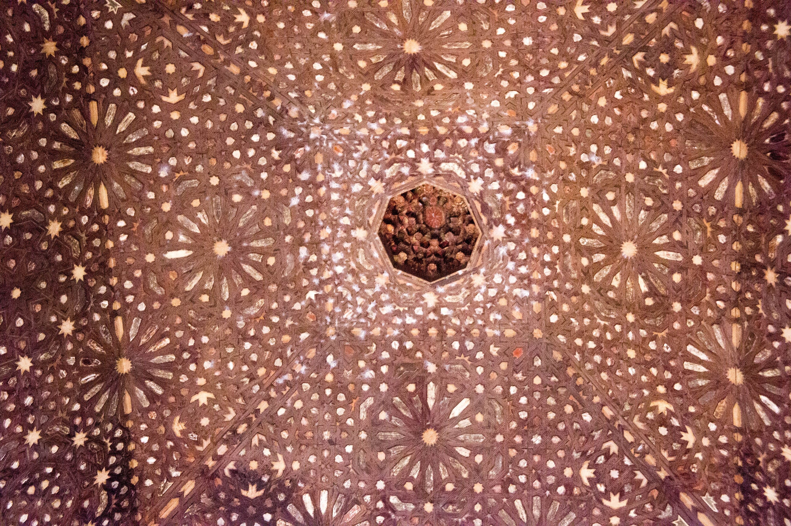
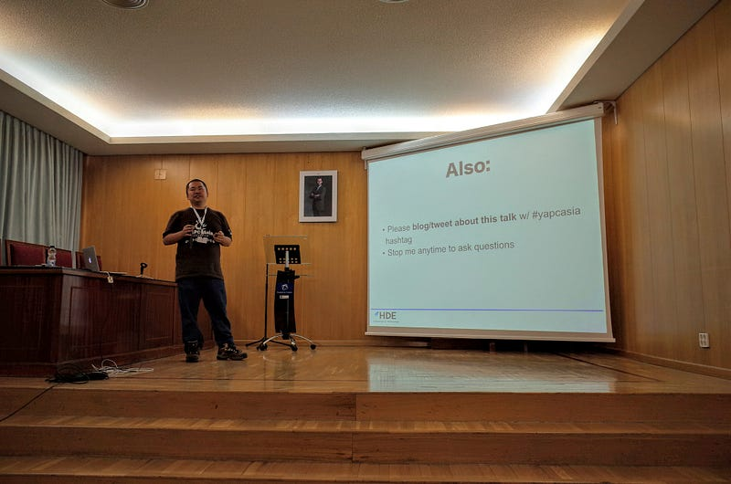
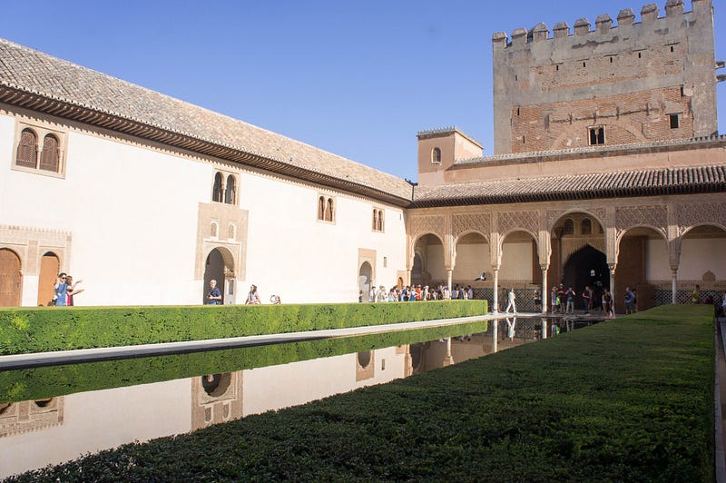
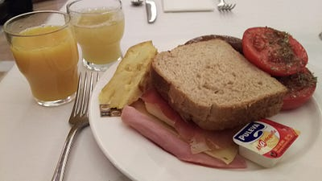
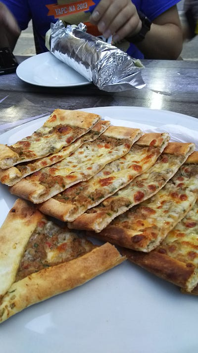

YAPC::EU 2015 @ Granada
YAPC::EU 2015 @ Granada

First of all, a big thanks to my employer, HDE Inc., for sending me to YAPC::EU 2015 in Granada. I think I was able to make new friends, and leave a good impression about Japan.
My Main Talk
On the second day, I gave my talk, “YAPC::Asia Tokyo Behind The Scenes, Or How We Organize A Conference For 2000 Attendees”

This was basically the same talk I did in YAPC::NA 2015, but I redid the whole sequence, and inserted much better photos. I think the slides were more pleasing to the eye (provided that the projector actually showed them correctly…) here are the slides:
I think it was well received, as I kept getting asked about organizing events and what not during the conference. Obviously things don’t always work like YAPC::Asia Tokyo, so what I have done may not necessarily work for everybody, but I’m glad to be of help, if anybody needs me.
I also was asked numerous times if I’m really not doing anything again. Well, I’m definitely not doing a YAPC again. But I am thinking of a new conference and with a different organizational approach that I’m hoping would scale beyond myself so I’m no longer the single point of failure. I already have a pretty clear vision about how to approach this problem, but for now no public comments yet… I want to rest from being an organizer :D
[UPDATE] @uzulla has done a recording of my talk, and and has kindly published it on youtube:
My Lightning Talk
On the final day I did a Lightning Talk. At first I conceived of a talk where I speak in Japanese and the slides are in both English and Japanese, but the content of that talk was rather serious in nature — I talked about the problems that we face when our underlying cultures are so different from each other, eventually ending with the joke about Japanese liking things fast that was constantly being mentioned during the conference.
Then I showed it to Ishida-san aka @uzulla. I got distracted for a moment with another YAPC attendee, and when I came back to him, he had a list of jokes and what not to insert into my talk. “Oh!” I thought, “I guess I’ll ditch all the seriousness, and go for the laughs!”
So then we worked on the details some more. Eventually it was time for the Lightning Talks session, then I kept tuning it solo. Somebody mentioned Perl Book covers in their Lightning talk, and I decided that would be a great intro to my talk. See, I was still debating how to start my talk, because I knew that if I just started speaking in Japanese, some people might miss the main joke which is that I, a fluent English speaker, was actually speaking in a language that was totally gibberish to the audience.
I quickly inserted the little bit about my book that I published way back in 2009 in Japan. When it was time for my talk, I started speaking in English, did a bit of advertisement for the book, and then I started my talk.
I’m glad it was well received, and I’m even more glad that @uzulla recorded the entire talk (btw, organizers, you *CAN* record talks pretty darn cheaply. post-production is the only expensive part).
One thing I forgot to include in the slides were the credits, so here goes:
The above talk was performed by @lestrrat, and was written by @uzulla and @lestrrat
:D I’m glad we were able to work this impromptu talk out. Here are the slides without the advertisement in the beginning:
Alhambra
Oh boy, Alhambra was GREAT. The regular tickets were already sold out when I got around to it, so we got the guided tour deal. This turned out to be a wise choice. Alhambra and Generalife was just way too big for a person having no knowledge of the history and context to grasp in a few short hours.

The Palace was just incredible. I really wished I’d taken my wife with me: We could have stayed in a room for hours on end, just marveling at the details of the construction and decoration.
I don’t know when, but when my family is ready, I’m definitely coming back to show them this beautiful palace again
Food

Look, I’m biased. I used to live in Portugal, I used to live in Brasil. I like the foods originating from the Iberian Peninsula. Whenever I see all sorts of ham and cheese (which can be obtained in Japan, but they don’t come as cheaply) in the breakfast, I’m filled with joy. Whenever I can get my hands on a good paella de mariscos, it’s one of the happiest days of my life.

So I just enjoyed the food in Granada. I don’t know, to a gourmet person the food may have been touristy or whatever, but dude, I enjoyed it. That’s all that matters.
I actually think I drank more sangrias during the three nights stay than my entire life. They were good too. The beer was nice as well.
Spanish
So as I wrote elsewhere, I have experience living in Portuguese speaking countries. I tried my best to speak as much of my pseudo-Spanish during my stay. I have always been on the receiving end while organizing YAPC::Asias, so I know that when visitors try to communicate according to local customs, you get a bit of warm and fuzzy feeling.
I think my pseudo-Spanish worked out at most of the places. In the end it was mostly just changing pronunciations here and there on my side, and the rest of the time it was getting my ears accustomed to Spanish. Old habits die hard I guess.
Now, Back To Japan
So I’m writing this in Madrid airport, where they only allow you to connect to the WiFi network for free for only 30 minutes in any 24 hour window. I have to say Madrid airport just stinks, but my flight doesn’t leave for another 3 hours… I bit the bullet and paid to have network connection and be able to write this blog entry.
The whole conference was a lot of fun. The only real gripe I have was the lack of recording of the talks. We also could have used more power outlets, but because the hotel was close enough, it wasn’t that much of a problem.
Granada was a great place. I hope I can come back here again. Thanks for the organizers, and thanks for all who took the time to come listen to my talk or to talk to me (and my fellow Japanese colleagues).
See you soon at another conference.